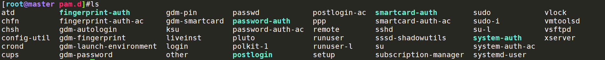
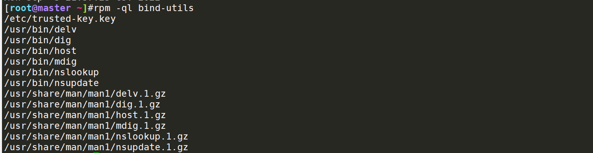
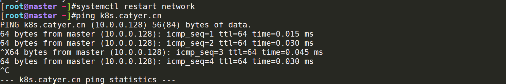
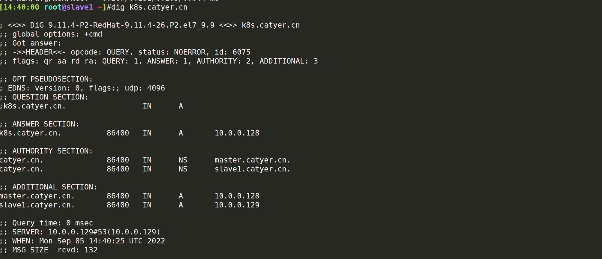
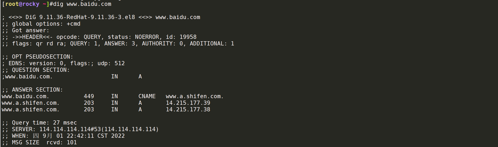
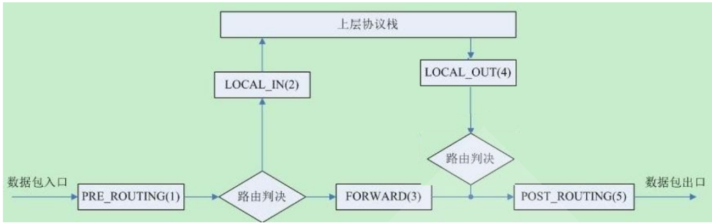
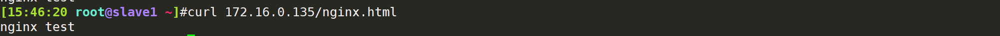
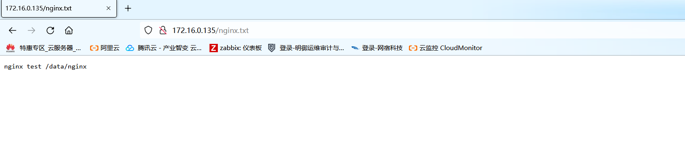
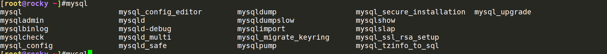

1.SUDO,PAM配置规范说明 sudo机制 root用户允许普通用户执行一些命令，或者直接代替/root去执行所有命令
su catyer：切换用户
su：切换到root用户执行
sudo配置：一般是去到/etc/sudoers配置对应的用户，用户上配置对应的权限，或者是执行的命令
需要注意的是：生产过程中一般给不同的业务人员不同的权限，创建对应的系统用户，或者对不同的用户授予不同的命令权限
授权给catyer用户，代表可以代替root用户执行ls命令，但是在执行的时候需要加上sudo；但是除了ls命令（对root用户权限下）的操作外，其他的操作需要额外的授权，如果是ALL，则是全部命令
1 2 3 4 5 6 7 8 9 10 11 12 13 14 15 16 17 18 19 20 21 22 23 24 25 26 27 28 29 30 31 32 33 34 35 which ls ls /root/tmpcd 命令就不行了，需要添加/bin/cd /root/tmp这个权限，权限颗粒度到这个级别了cd /root/tmp'/bin/cd /root/tmp' as root on master.
pam机制 PAM：属于一种验证性的模块，或者叫做验证性的接口，可以给到其他程序或者服务调用pam认证模块去实现认证功能，只关注如何验证用户的API
PAM机制自己有统一规范的API接口，供各程序调用
查看主配置文件目录：ls /etc/pam.d

案例：查看某个服务是否支持PAM认证
1 2 3 which sshd` | grep libpam
PAM认证流程
1.某个命令或者程序执行，比如ssh 10.0.0.128
2.找到sshd这个服务对应的libpam.so.d
3.pam库调用对应的验证模块进行验证
4.pam决定下一步该怎么走
2.chrony搭建私有ntp服务 搭建chrony NTP服务器，chrony：NTP同步时间服务
客户端程序：chronyc
服务端程序：chronyd
1 2 3 4 5 6 7 8 9 10 11 12 13 14 15 16 17 18 19 20 21 22 23 24 25 26 27 28 29 30 31 32 33 34 35 36 37 38 enable --now chronyddisable --now firewalld yes yes in local TZ: no"Asia/Shanghai" date
客户端chronyc配置
1 2 3 4 5 6 7 8 9 10 11 12 13 14 15 16 17 18 19 20 21 22 23 24 vim /etc/chorny.confin local TZ: noyes in local TZ: no
chronyc客户端命令实例
1 2 3 4 5 6 7 8 9 10 11 12 13 14 15 16 17 18 19 20 21 22 23 24 25 26 27 28 29 30 31 '^' = server, '=' = peer, '#' = local clock.'*' = current best, '+' = combined, '-' = not combined,'x' = may be in error, '~' = too variable, '?' = unusable.
3.说明CDN的原理 关于CDN的原理：内容分发网络（Content Delivery Network，CDN）是建立并覆盖在承载网上，由不同区域的服务器组成的分布式网络。将源站资源缓存到全国各地的边缘服务器，供用户就近获取，降低源站压力。
本地用户访问方向：
1.在本地找网站/图片缓存，本地浏览器
2.没有的话找到附近DNS服务器，通过全局的GSLB算法返回到客户端的最佳CDN节点
3.CDN节点上没有找到对应要访问的内容(.jpg/png，.html，.pdf等)，回源站拉源站数据，回源站拉数据需要一定的时间
4.从源站获取到数据，返回到客户端
5.客户端建立缓存，CDN节点建立缓存，下次访问的时候直接读缓存
CDN使用方式 1.在源站搭建好相关的WEB服务，源站类型可以为服务器IP地址、OSS等
2.配置CDN服务，创建CDN域名，配置CDN回源到对应的源站：如果是服务器，则配置公网IP地址；如果是OSS，则添加OSS对应的对外访问域名
3.要启用CDN服务，需要公网DNS解析添加对应CDN加速域名的CNAME记录解析，访问到CNAME，访问到CDN加速域名的时候，即启用了CDN服务；同时如果CDN解析到源站是IP地址的话，将CDN的CNAME地址解析到对应的源站IP地址
xxx.ctfmall.com—>xxx.ctfmall.com.w.kunluncan.com
xxx.ctfmall.com.w.kunluncan.com—>IP地址
4.确保CDN访问到源站，对应的服务要起来，对应的资源路径要正确
5..访问到源站站点，访问正常，第一次如果是第一次配置访问，则会有点慢，因为需要回源站拉内容；第二次刷新访问正常，已经是读缓存内的内容了
4.搭建智能DNS 架构：搭建DNS服务器，从内网实现访问到公网
环境：主DNS服务器 10.0.0.128
从DNS服务器+客户端 10.0.0.129
4.1 配置DNS主服务器，配置named.conf配置文件 bind，bind-utils(dns测试工具，可以不装)
bind的测试工具包括：dig(最全面的域名解析工具)，host(简易版DNS解析测试)，nslookup(windows风格的)，最常用的就是dig，显示内容最多
1 2 3 rpm -ql bin-utils：查看这个包中有哪些工具bind bind-utilsenable --now named

修改默认dns配置文件，监听为指定网段10.0.0.0/24，vim /etc/named.conf
1 2 3 4 5 6 7 8 9 10 11 12 13 14 15 16 17 options {"/var/named" ;"/var/named/data/cache_dump.db" ;"/var/named/data/named_stats.txt" ;"/var/named/data/named_mem_stats.txt" ;"/var/named/data/named.recursing" ;"/var/named/data/named.secroots" ;"/etc/named.rfc1912.zones" ;"/etc/named.root.key" ;
使用到的用户+用户组：root，named；group：named，安装了named服务后就会生成这个named的用户和用户组
1 2 3 4 5 id rootgroups =0(root)id named---记得修改域配置文件所属组为namedgroups =25(named)
rndc命令：对于dns缓存，配置的使用，刷新Linux机器的DNS缓存
1 2 3 rndc --help
各种资源记录(RR：resource record)，文件路径：/var/named/named.localhost，/var/named/catyer.cn.zone(自已命名)，后续可以在这里写域名解析的文件
4.2 写主DNS服务器配置(DNS记录) SOA记录：一般写在首行，一条记录，作为起始的授权记录
NS：解析，正向解析记录
A记录：域名—IPV4地址
AAAA记录：域名—IPV6地址
TXT：文本记录
CNAME：别名记录(CDN，WAF等)
PTR：反向解析，指针
1 2 3 4 5 6 7 8 9 10 11 12 13 14 vim /var/named/catyer.cn.zone #文件标准格式：其实也是个文件，只需要记得写入zone配置文件就好了
主从DNS服务器的同步机制：主服务器一般是有新的更新就推送，从服务器一般是定时拉更新的数据
主从DNS同步依赖条件：serial，类似MySQL主从的binlog文件版本号的变化，binlog_000003类似这样的文件名
PS：一定要记住修改catyer.cn.zone文件的所属组，不然这个文件是不生效的(本地域名解析) 1 2 3 4 chgrp named /var/named/catyer.cn.zone
4.3 写主DNS域配置文件/etc/named.rfc1912.zones 将zone的配置信息(catyer.cn)配置到统一的域配置文件内，这里面是/etc/named.frc1912.zones
1 2 3 4 5 6 7 8 9 10 11 12 13 14 15 16 17 18 19 20 21 22 23 24 25 26 27 "catyer.cn" IN {type master; "catyer.cn.zone" ; "yes"
分别都可以解析到IP，即本地的DNS服务器搭建成功，访问本地服务。访问到k8s.catyer.cn这个域名服务的，添加了DNS A记录后，不需要添加本地HOST文件就可以访问到解析的域名了

4.4 搭建从DNS服务器(DNS2) 安装dns服务：yum -y install bind bind-utils
注释掉named.conf配置文件内的监听限制，不然这个slave只会监听本地
1 2 3 4 5 6 7 8 9 10 options {53 { ::1 ; };"/var/named" ;"/var/named/data/cache_dump.db" ;"/var/named/data/named_stats.txt" ;"/var/named/data/named_mem_stats.txt" ;"/var/named/data/named.recursing" ;"/var/named/data/named.secroots" ;
编辑域配置文件，写上是catyer.cn主DNS(主域)的从域，type为slave
1 2 3 4 5 6 7 vim /etc/named.rfc1912.zones"catyer.cn" {type slave;"catyer.cn.zone.slave" ;
编辑好后，重启named服务，配置网卡文件DNS2(DNS从服务器)
1 2 3 4 5 6 7 8 9 10 11 12 13 vim /etc/sysconfig/network-scripts/ifcfg-ens33
尝试解析k8s.catyer.cn这个域名，发现承载的dns服务器是10.0.0.129，证明停止了DNS1，DNS2成功生效工作，k8s.catyer.cn是在10.0.0.128上面做的A记录，但是承载本地DNS解析的是129这台地址，k8s.catyer.cn这个地址本身的DNS解析就是10.0.0.128，从DNS搭建成功
在slave1上测试：dig k8s.catyer.cn

4.5 从指定的DNS服务器(IP)上查询该解析+DNS服务器地址 1 2 3 4 5 6 7 8
5.解释DNS解析流程
DNS解析流程：
想要访问www.baidu.com这个域名，使用迭代查询的方式去查询这个域名的解析的IP地址
1.找本地地址(host文件)—>本地配置的DNS服务器(DNS缓存(浏览器))，不用每次都去找根服务器；DNS服务器有缓存，本地也有缓存；
windows服务器有DNS缓存，使用ipconfig /flushdns可以刷新本地缓存；Linux服务器的DNS客户端没有缓存
2.DNS服务器找到根服务器(互联网的根服务器)，开始迭代查询，根服务器：.，其实完整的域名应该是www.baidu.com .
3.找顶级域名，因为baidu.com是.com，所以找.com的顶级域名服务器里面找解析
4.找一级域名baidu.com这个的DNS解析
5.从baidu.com这个解析里面就有www.baidu.com这个二级域名配置了记录集，传回到用户，实现www.baidu.com这个域名解析到百度后端的某个IP地址
递归查询：指的是请求到了，服务器无法反馈结果，会去找到结果并且最终反馈—处理到底；DNS服务器必须返回一个准确的结果给到客户端
迭代查询：找别人查找，自己不处理—找别的DNS服务器查询解析，根域名—顶级域名—一级域名
DNS查询的工具 windows：nslookup
linux：安装bind-utils，工具包有dig，nslookup，host等工具，比较常用的就是dig，能够显示比较完整的信息，host比较简洁，解析出IP地址出来
rpm -ql bind-utils

6.iptables 5表5链解释 iptables5表指的是：filter：过滤规则，允许/拒绝某些流量流入，比如INPUT，OUPUT等，NAT：地址转换表，包括SNAT和DNAT，mangle：修改数据规则表，raw：加快通过防火墙的速度
security：强制安全规则，由SELINUX实现，/etc/config/selinux
5表中最为常用的就是filter(过滤表)，和nat(地址转换表)
5链（chain）：PREROUTING（总入口），INPUT（入方向的包），OUTPUT（出方向的包），FORWARD（经过内部转发，转发机制），POSTROUTING（总出口）

1 2 3 4 5 6 7 8 9 10 11 12 13 14 source destination
7.iptables/firewalld/nftable 实现主机防火墙。5000-6000端口仅192.168.0.0/24网段内的主机访问 环境：外网业务机器开放5000-6000业务端口，只允许公司内网192.168.0.0/24网段访问，目前先实现80业务端口访问
防火墙过滤：iptables。使用SNAT做流量转发，仅允许内网网段访问，需要从POSTROUTING chain转发出去，一般使用动态IP地址转换，
防火墙主机：10.0.0.128 网卡1：NAT模式（网关10.0.0.2） 172.16.0.10 网卡2：仅主机模式（网关172.16.0.2）
内网访问客户端：10.0.0.129
ubuntu外网机器：172.16.0.135 网卡2：仅主机模式（网关172.16.0.2）服务：nginx web服务器
前提条件：开启IPV4转发
1 2 3 [root@master ~]
配置基本的iptables snat转发
1 2 3 4 5 6 7 8 9 10 11 12 13 14 15 16 17 18 19 20 21 22 23 24 25 26 27 28 29 30 31 32 33 34 35 36 37 38 39 40 41 42 43 44 45 46 47 48 49 50 51 52 53 54 55 56 57 58 59 60 source destination cp ifcfg-ens33 ifcfg-ens36test is successfultail -f /var/log/nginx/access.log"GET / HTTP/1.1" 200 612 "-" "curl/7.29.0" dd if =/dev/zero of=/var/www/html/test2.txt bs=1M count=1024


8.mysql的各发行版有哪些 ？ MySQL：5.6 、5.7、8.0版本（linux 8.0 release），分为社区版和企业版
mariaDB：5.6、5.5、10.3（linux 8.0 release），MariaDB是由MySQL初始创建者在MySQL被Oracle收购之后，又独立成立了一家公司，来开发的数据库。MariaDB并不能完全和MySQL官方版完全兼容，但大多数功能是兼容的。
percona：Percona是由MySQL最初开发者组成的一个社区，Percona MySQL是基于官方社区版本二次开发的，在MySQL官方社区版的基础上增加了一些MySQL官方企业版才有的功能，同时对官方社区版进行了一些优化，从目前公布的数据来看，Percona MySQL 性能是要优于MySQL官方社区版的。
percona还是免费的，对于percona出了一个专业级别的mysql备份工具xtrabackup，和MySQL商业版的备份工具功能类似，还不用钱
MySQL Percona MySQL-server MariaDB
是否开源
开源
开源
开源
事务型存储引擎
InnoDB
XtraDB
XtraDB
监控工具
企业版监控工具，社区版不提供
Percona Monitor工具
Monyog
9.mysql索引的作用 MySQL索引一般是用于加速表的查询的，索引一般分为
1.主键索引：基于主键做的索引，比如订单表的编号是自动增长的(auto_increment)，同时订单号又是主键，可以做基于订单号的索引
2.聚簇索引：数据data和索引index放在一起，形成一个磁盘上的文件
3.B+TREE索引：索引上只存放索引信息，基本分为一层根节点+一层分支节点，下面都是数据了，查询效率最高，一般的MySQL表都是BTREE索引，同时下面的数据都是加了链表的，数据都是有链接起来的，查询速度快，节省性能—>一般来说都是b_tree索引
查询某张表的索引情况
1 2 3 4 5 6 7 8 9 10 11 12 13 14 15 16 17 [hellodb]> show index from stu\G;* * * * * * * * * * * * * * * * * * * * * * * * * * * 1. row * * * * * * * * * * * * * * * * * * * * * * * * * * * Table : stu0 PRIMARY 1 Collation : ACardinality : 25 NULL NULL Null : NULL
查询是否有使用index索引来进行查询，显示只遍历了一行，而不加索引字段进行查找，需要遍历整张表，需要遍历25行
1 2 3 4 5 6 7 8 9 10 11 12 13 14 15 16 17 18 [hellodb]> explain select * from hello.stu where stuid= 10 ;+ | id | select_type | table | partitions | type | possible_keys | key | key_len | ref | rows | filtered | Extra | + | 1 | SIMPLE | stu | NULL | const | PRIMARY | PRIMARY | 4 | const | 1 | 100.00 | NULL | + 1 row in set , 1 warning (0.00 sec)select * from hellodb.students where age= 22 ;> explain select * from hellodb.stu where age= 22 ;+ | id | select_type | table | partitions | type | possible_keys | key | key_len | ref | rows | filtered | Extra | + | 1 | SIMPLE | stu | NULL | ALL | NULL | NULL | NULL | NULL | 25 | 10.00 | Using where | + 1 row in set , 1 warning (0.01 sec)show profiles;
索引的优势：加速表的查询，不用遍历整张表，对某个字段加了索引，加快查询
索引的劣势：如果表数据经常更新（insert、update等），不建议用索引，因为需要时常更新索引，占用一定的库性能；而且索引的磁盘文件.idx也会占用一定的磁盘空间
特殊查询：只能查询左前缀相同的，按照比如订单号都是2022开头的，按这个次序来排序
10万条记录表创建索引优化查询速度 大表尽量避免做全表扫描，之前由存储过程生成的10w条记录的表testlog
存储过程：自动化的插入、更新同一张表的数据
1 2 3 4 5 6 7 8 9 10 11 12 13 14 15 16 17 18 19 20 21 22 23 24 25 26 27 28 29 30 31 32 33 34 35 36 37 38 39 40 ##用现有的存储过程call sp_testlog;5 行> select * from testlog limit 3 ,5 ;+ | id | name | salary | + | 4 | wang65321 | 323142 | | 5 | wang65606 | 310887 | | 6 | wang58624 | 998574 | | 7 | wang23413 | 174936 | | 8 | wang17228 | 336622 | + 5 rows in set (0.03 sec)where 条件select * from testlog where salary= 489141 ; select * from testlog where salary= 489141 ;create index idx_salary on testlog(salary);sql 语句的执行情况，可以看到以索引来查询比没有索引的速度快了将近20 倍set profiling= ON ;show profiles;show profiles for query ID;show profiles：查看sql 语句的执行速度100 万条记录查询出一个salary的值，使用索引是0.0003 s，不使用索引是0.01 s，速度有很大的差别了@localhost ) [hellodb]> show profiles;+ | Query_ID | Duration | Query | + | 1 | 0.00030300 | select * from testlog where salary= 489141 | | 2 | 0.00007425 | drop index idx_salary from testlog | | 3 | 0.00987600 | drop index idx_salary on testlog | | 4 | 0.01724175 | select * from testlog where salary= 489141 | +
10.mysql安全加固？ 在MySQL 8.0以前的版本，一般都会使用mysql_secure_installation这个脚本，这个脚本的执行方式在于MySQL客户端的执行命令

1 2 3 4 5 6 7 8 9 mysql_secure_installation1. 输入现有root用户的密码，可以到安装MySQL的日志里面找到temporary密码2. 重置MySQL密码3. 删除匿名用户4. 删除test库(8.0 后没有test库了)5. done
mysql8.0的密码策略+密码验证组件 可以查看user表的password plugin插件，以及MySQL自带的密码验证组件validate_password component，这个密码验证组件在安装MySQL的时候默认开启
使用caching_sha2_password 这个密码插件的话，需要遵循MySQL8.0的新的密码特性，比较复杂
show variables like ‘default_authentication_plugin%’;：默认的MySQL身份插件
—>在生产中可以考虑密码策略，需要更高的强度
1 2 3 4 5 6 7 8 9 10 11 12 13 14 15 16 17 18 19 20 21 22 23 24 25 26 27 28 29 30 31 32 33 34 35 36 37 38 39 40 41 42 查看密码管理策略> show variables like '%caching_sha2_password%' ;+ | Variable_name | Value | + | caching_sha2_password_auto_generate_rsa_keys | ON | | caching_sha2_password_digest_rounds | 5000 | | caching_sha2_password_private_key_path | private_key.pem | | caching_sha2_password_public_key_path | public_key.pem | + 4 rows in set (0.00 sec)> select user ,host,plugin from mysql.user; + | user | host | plugin | + | root | % | caching_sha2_password | | wp | % | caching_sha2_password | | catyer | 10.0 .0 .% | mysql_native_password | | mysql.infoschema | localhost | caching_sha2_password | | mysql.session | localhost | caching_sha2_password | | mysql.sys | localhost | caching_sha2_password | | root | localhost | caching_sha2_password | | wpuser | localhost | caching_sha2_password | + 8 rows in set (0.00 sec)> alter user root@'%' identified by '123' ;1819 (HY000): Your password does not satisfy the current policy requirements/ / 需要加上with mysql_native_passwordalter user root@'%' identified with mysql_native_password by '123' ;> show variables like 'default_authentication_plugin%' ;+ | Variable_name | Value | + | default_authentication_plugin | caching_sha2_password | + 1 row in set (0.00 sec)
MySQL密码验证组件：validate_password component 指定复杂的密码策略：https://blog.csdn.net/zy_1995/article/details/102706728
如果不想要这个密码策略可以删除这个组件，卸载组件，参考官方文档可以删除
1 2 3 4 5 6 7 8 9 10 11 12 13 14 15 16 17 18 19 20 21 22 23 24 25 26 [(none )]> show variables like 'validate_password%' ;Empty set (0.00 sec)+ | Variable_name | Value | + | validate_password.check_user_name | ON | | validate_password.dictionary_file | | | validate_password.length | 8 | | validate_password.mixed_case_count | 1 | | validate_password.number_count | 1 | | validate_password.policy | MEDIUM | | validate_password.special_char_count | 1 | + 7 rows in set (0.00 sec)'file://component_validate_password' ;'file://component_validate_password' ;none )]> show variables like 'validate_password%' ;Empty set (0.00 secnone )]> alter user root@'%' identified by '123' ;0 rows affected (0.01 sec)
修改MySQL的密码策略plugin 1.可以在/etc/my.cnf内指定密码策略，重启mysqld服务生效
2.在修改某个user@’host’的时候，加上with mysql_native_password
1 2 3 4 5 6 7 8 9 10 11 12 vim / etc/ my.cnf= mysql_native_passwordnone )]> show variables like 'default_authentication_plugin%' ;+ | Variable_name | Value | + | default_authentication_plugin | mysql_native_password | + 1 row in set (0.15 sec)